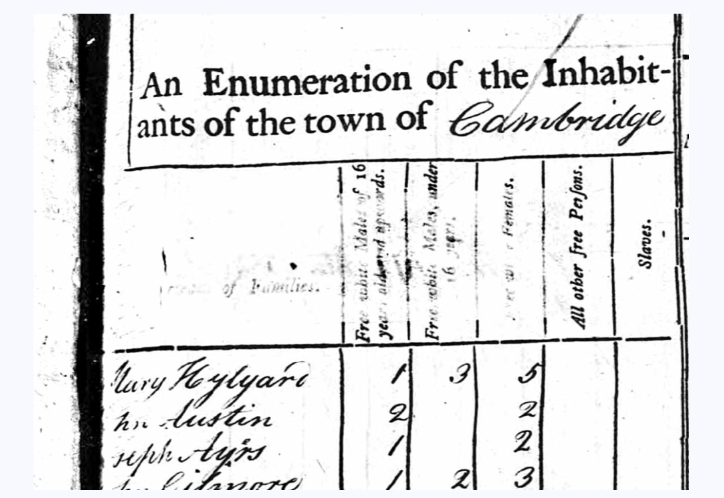
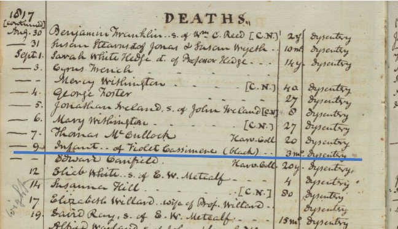

Mapping Black Cambridge
Quote, 'In August 1790, the United States of America conducted its first federal census. The data collected was minimal; census takers recorded no addresses, no professions, and no names except for head of household. Household members were tallied in demographic categories race, and—for white people only—gender and age...'
The Harvard Map Collection recently partnered with the Leventhal Map and Education Center at the Boston Public Library to support a digital mapping project by scholars Joan Brunetta and Eve Loftus. Joan and Eve’s project, titled Mapping Black Cambridge, contributes to an evolving landscape of available data used to discern historic dimensions of Black life in Boston and Cambridge.

Leveraging historic maps and records from local libraries and archives, along with GIS training services, Joan and Eve have created a dataset from their meticulous research about Black life in Cambridge in the 19th century. Researchers can now browse Joan and Eve’s findings in an interactive web map.

In addition to discovering historic GIS datasets via these portals, researchers can also make use of the library’s trainings and guided brainstorming sessions on how to maintain and preserve their own historic datasets for long-term discovery and reuse.